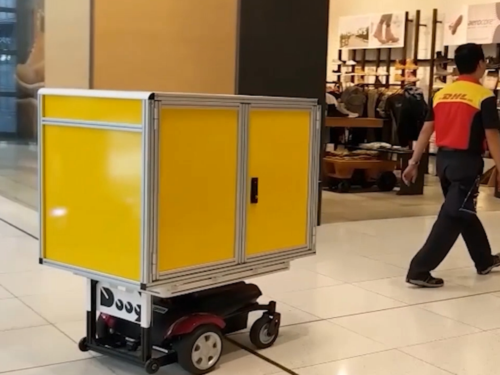
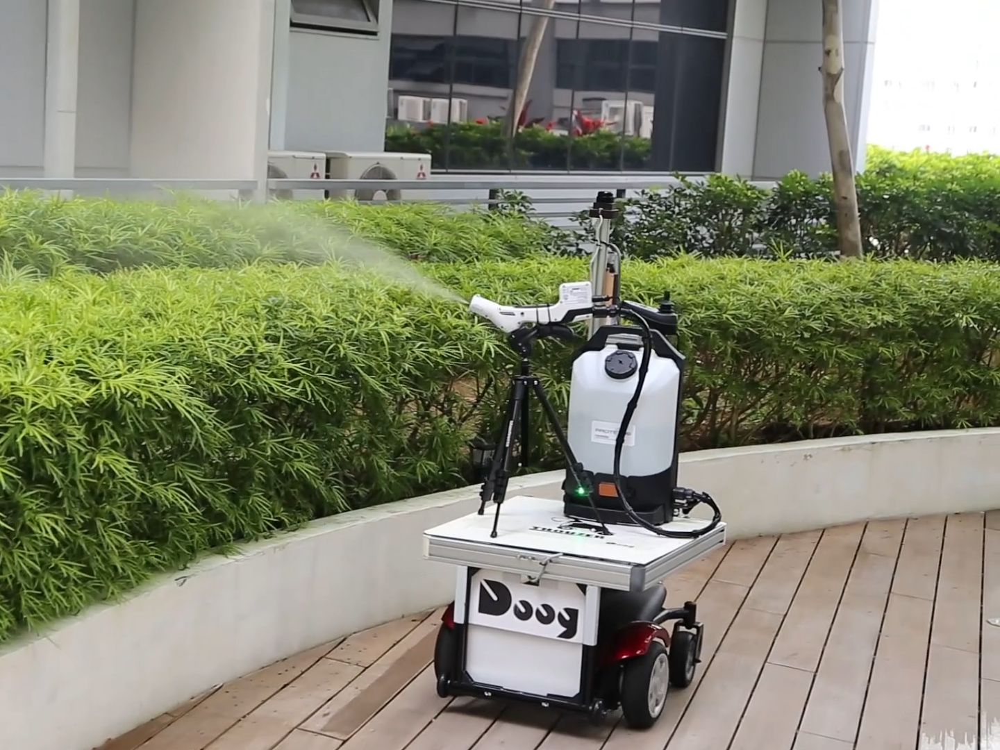
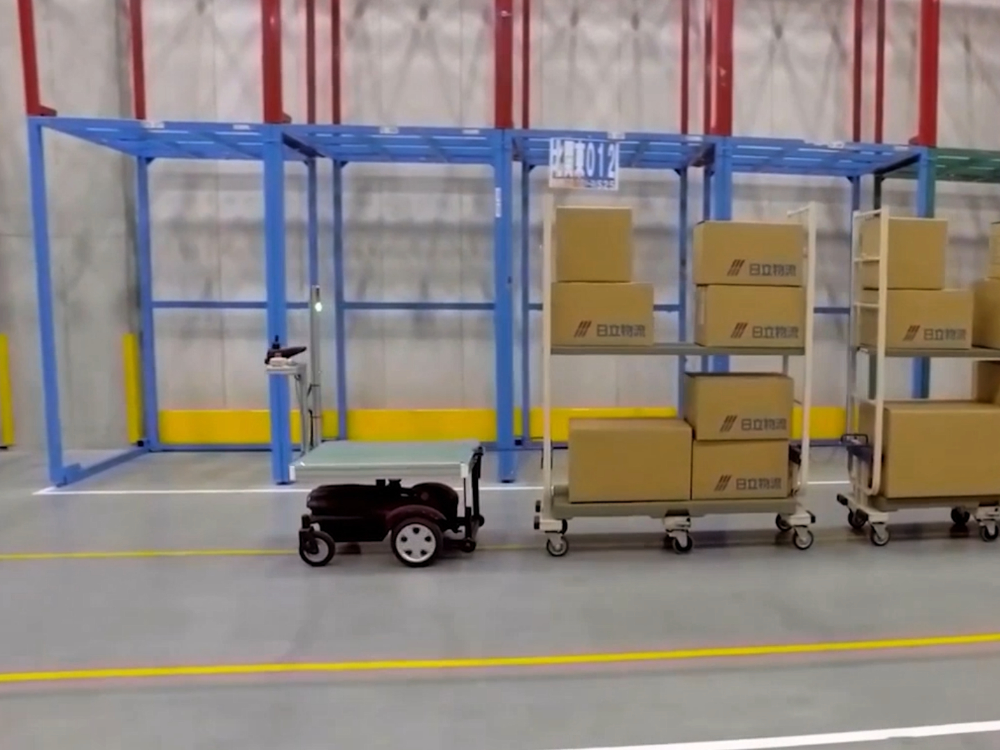

Mode 01 · Follow-Me
추종 주행
라이다 센서로 작업자를 인식해
뒤를 따라다니며 짐을 나릅니다.
사람이 무거운 걸 들 필요가 없어집니다.
WORRIES
자동화는 하고 싶은데, 막상 알아보면
이런 벽에 부딪히지 않으셨나요?
설비 부담
AGV·AMR은 견적부터 커집니다.
공사에 서버 구축까지.
인력난
단순 운반에 사람을 계속 붙잡아 두기가
점점 어렵습니다.
도입 리스크
“우리 현장에 맞을까?”
확신이 안 서 자동화를 미루게 됩니다.
SOLUTION
매핑도, 서버도, 별도 설비도 필요 없습니다.
THOUZER는 현장 상황에 맞춰
세 가지 방식으로 일합니다.

라이다 센서로 작업자를 인식해
뒤를 따라다니며 짐을 나릅니다.
사람이 무거운 걸 들 필요가 없어집니다.

한 번 알려준 경로를 기억해
자동으로 주행합니다.
정해진 길을 하루 종일 대신 오갑니다.

바닥에 반사 테이프만 붙이면
정해진 라인을 따라 움직입니다.
공사 없이 경로가 완성됩니다.
외부 프로그램도, 설비 투자도 없이
로봇 본체 하나면 즉시 시작됩니다.
OUR VISION
무겁고 반복되는 운반은 이제 로봇에게 맡기세요.
사람은 더 중요한 일에 집중하고,
일손이 부족해도 현장은 멈추지 않습니다.
검증된 로봇 기술로 인력난과 효율화의 벽을 넘어,
우리는 한국의 제조·물류 현장이
계속 움직이도록 만듭니다.
PRESS
THOUZER는 국내 최대 제조기술 전시회에서
이미 소개됐습니다.
SIMTOS 2026 · 2026.4.13–17 · 일산 킨텍스 참가
THE ANSWER
대규모 설비 없이, 지금 현장 그대로 반복 운반을 자동화하는 실전형 운반 로봇입니다.
GLOBAL CLIENTS
일본 Doog社 THOUZER는 글로벌 대기업의
물류·제조 현장에서 도입·활용되고 있습니다.
GET STARTED
도입 결정 전에 데모와 PoC로 검증할 수 있습니다.
부담 없이 문의하세요.
상담 가능 시간 · 월~금 09:00 – 18:00